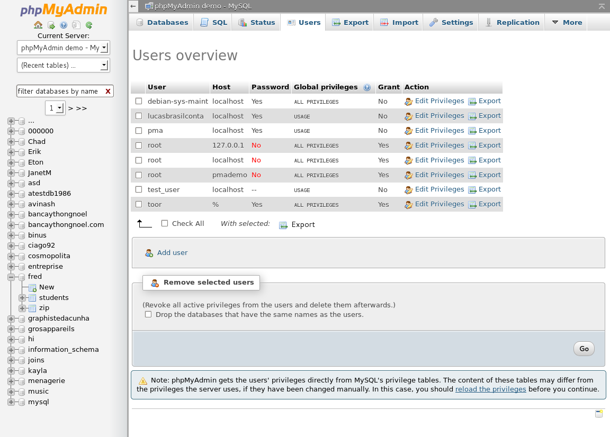

Faculté des Mathematique et informatique
Departement d'Informatique
Presentation de projet fin d'etude
REALISATION D'UNE APPLICATION WEB DE GESTION DES EQUIPEMENTS POUR LA SOCIETE DE L'EAU ET DE L'ASSAINISS EMENT (SEOR)
Presenté PAR
ARABI ABDELILLAH & SAKHRI HOUSSEM EDDINE
Encadré PAR
Mlle BENDOUKHA HAYAT
Examiné PAR
Mr NEGGAZ NABIL
Stage a la societe d'eau et de l'assainissement (SEOR)
encadré par
MR Ait Noureddine
PLAN DE LA PRéSENTATION
- Presentation de la seor
- Gestion de stock
- Outil de conception d'application
- Implementation d'application
- Description de l'application
- Conclusion et Perspectives
SEOR 2008-2016:
UN DEVELOPPEMENT ININTERROMPU
- Le 1er avril 2008, une société par actions détenue par l'Algérienne des eaux(ADE) et l'Office da national de l'assainissement(ONA) a vu le jour, au terme d'une fusion entre les deux entités de la wilaya d'Oran.
- Pour une meilleure efficacité et pour essayer d'offrir un meilleur service aux habitants, l'entreprise espagnole Agbar a été chargée de la délégation de la gestion de la SEOR, pour une période de cinq ans et demi.
- Une fois la période de gestion déléguée terminée, Agbar continue d'assurer une assistance technique, ce qui fut fait partir du 30 juin 2014.
MISSIONS ET OBJECTIFS DE LA SEOR
Dès sa création, la SEOR s’est vue confier les missions suivantes
- Garantir la qualité de l’eau et la distribution en H24
- Améliorer les temps de réponse pour les interventions
- Réaliser le projet de télé contrôle
- Assurer la sectorisation des réseaux de distribution
- Réaliser la maintenance les installations hydraulique et électromécaniques
- Gestion de l´assainissement
- Formation de tout le personnel
ORGANISATION SEOR
NIVEAU CENTRAL

NIVEAU DECENTRALISE

PRESENTATION DU DEPARTEMENT HYGIENE ET SECURITE
ORGANIGRAMME DU DEPARTEMENT HYGIENE ET SECURITE
MISSION DU DEPARTEMENT HSE
- Inspections au niveau des installations de l’assainissement et AEP et station de relevage de la SEOR
- Des recommandations ont été envoyés aux responsables et aux agents operateurs pour le respect des normes de sécurité, ainsi que la propreté des lieux
- Incorporation des techniciens de HSE pour réaliser des évaluations de risques des installations de l’assainissement et AEP et station de relevage de la SEOR et une planification de la formation
- visites sur des chantiers AEP et assainissement
PRESENTATION DU DEPARTEMENT LOGISTIQUE
ORGANIGRAMME DU DEPARTEMENT LOGISTIQUE

SERVICES DU DEPARTEMENT LOGISTIQUE
Le Département LOGISTIQUE se compose de six services :
- SERVICE APPROVISIONNEMENT
- SERVICE GESTION DES STOCKS
- SERVICE ACHATS
- SERVICE PARC ROULANT
- SERVICE PATRIMOINE
- SERVICE MOYENS GENERAUX
LA GESTION DU STOCK DANS LA SEOR
- Chaque structure dresse un plan d’action .
- Le département HSE lance un avis d’appel d’offre national sur les EPI et EPC
- Le choix du fournisseur est validé auprès de la commission interne lors des ouvertures des plis.
- La distribution des EPI et EPC se fait selon le règlement interne à savoir :
- Demande d’approvisionnement de chaque structure.
- Liste nominative de chaque bénéficiaire (taille et pointure).
- L’étape suivante est la dotation.
- Validation du Demande d'Approvisionnement
- Instauration du Bon de Sortie d’équipement par le Magasinier.
- Apres chaque opération de distribution des équipements par la logistique un nouveau inventaire est établi instantanément.
- Calcul du cout total de chaque structure
- Après l’achèvement de l’opération sous-indiquées un calcul d’écart est déterminé pour le prendre en considération l’année suivante.
CRITIQUES DE L’EXISTANT
L’objectif de cette étape consiste à faire ressortir toutes les anomalies, pour tenter d’étudier les causes profondes et chercher des solutions adéquates.
- La majorité du travail se fait manuellement.
- L’absence de l’utilisation de l’outil informatique dans certains services.
- Difficulté dans la recherche des documents.
- Accès difficile aux documents.
PROPOSITION DES NOUVELLES SOLUTIONS
- Développement d’une Application Web de gestion de stock.
- Simplification du travail en réduisant le traitement des différentes opérations en un temps réel.
- Eliminer la redondance en matière de l’information.
- Annuler les documents répétitifs.
- Développer des actions de formation relatives à certain logiciel.
- Faciliter l’accès au document on introduisant des outils informatique.
- Gérer les commandes, les demandes d’approvisionnement.
- Gérer les relations avec les fournisseurs, les gérances, les directions.
- Gérer les équipements (ajouter, modifier ou supprimer).
MODELE CONCEPTUEL DES DONNEES (MCD)

LANGAGE DE PROGRAMMATION
CHOIX DU LANGAGE DE PROGRAMMATION ‘PHP’
Pour la réalisation de notre Application web nous avons choisi PHP un langage de programmation libre qui a été conçu pour créer des sites "vivants" (dynamique) mais pouvant également fonctionner comme n'importe quel langage interprété de façon locale. PHP est un langage impératif orienté-objet.
CHOIX DE L’OUTIL DE DEVELOPPEMENT
Nous avons choisi comme outil de développement le XAMPP Server qui permet de développer des applications Web dynamiques à l'aide du serveur Apache, du langage de scripts PHP et d'une base de données MYSQL. La plate-forme possède également PHPMyAdmin.
XAMPP

PHPMyAdmin
JMerise

CHOIX DE L’EDITEUR DE TEXTE
JETBRAINS PHPSTROM

PRESENTATION DE NOTRE TRAVAIL
Notre application est centrée sur le domaine de l’informatique, elle permet de faciliter les taches aux utilisateurs, économiser le temps, et permet d’informatiser et d’automatiser ces opérations :
- L’acquisition d’ un équipement.
- Demande d'un équipement.
- Modifier la quantité des équipements demandées.
- Valider les demandes.
- Doter des équipements à une Gérance.
- Voir l’état du stock à n’importe quel moment.
- Faciliter la communication entre les gérances et le département HSE et le Magasinier.
DESCRIPTION DE L'Application
PAGE DE CONNEXION

PAGE D’ACCUEIL

Conclusion
Notre travail a débuté par la compréhension du contexte de notre projet. Ensuite, nous avons réalisé une étude de l'existant concernant les applications de gestion du stock, durant la période du stage dans la Société qui a durée 6 mois, qui nous a permis de fixer les anomalies à éviter et les objectifs à réaliser pour avoir un système satisfaisant. Puis, nous sommes passé à la l'étude conceptuelle de notre Application. Par la suite, nous avons effectué l'implémentation de l'Application.
Ce projet a été très bénéfique pour nous car il nous a permis de renforcer et enrichir nos connaissances théoriques dans le domaine de la conception, la programmation web et de mettre en application nos connaissances acquises le long de nos études. Il nous a encore donné l'occasion de maîtriser le langage de programmation PHP, la base de données MySQL et de nous familiariser avec la conduite des projets informatiques.
En plus, ce projet était une bonne occasion pour réaliser un travail très concret, avec des objectifs clairs et bien définis et de se familiariser avec l'environnement du travail et de la vie professionnelle.
En perspective, notre Application web de Gestion du Stock peut être améliorée en ajoutant d'autres fonctionnalités comme (Gestion des fournisseurs, Gestion des équipements en détail (taille des tenus, pointure), le calcul de somme de chaque Gérance, le calcul d’écart).
Remerciment
Pour commencer, nous voulons adresser nos remerciements à notre encadreur de mémoire madame BENDOUKHA Hayat , pour sa grande disponibilité et ses encouragements tout au long de la rédaction de ce mémoire.
Nous remercions également Monsieur NEGGAZ Nabil notre jurry qui nous fait l’honneur d’examiner notre travail.
nous tenons remercier MR Ait Noureddine, chef de département HSE, pour nous avoir accueillir au sein du département, ainsi que toute l’équipe de travail.